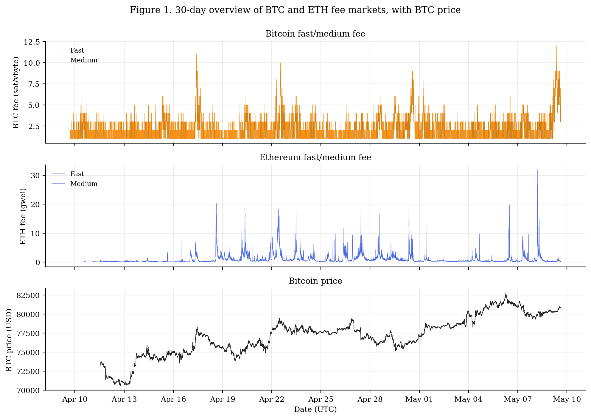
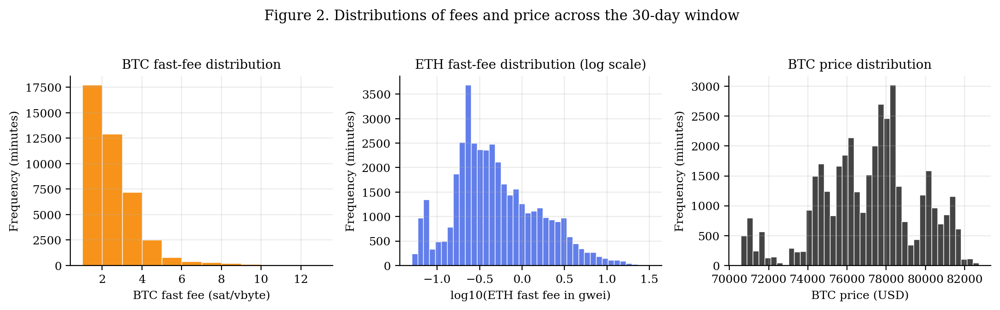
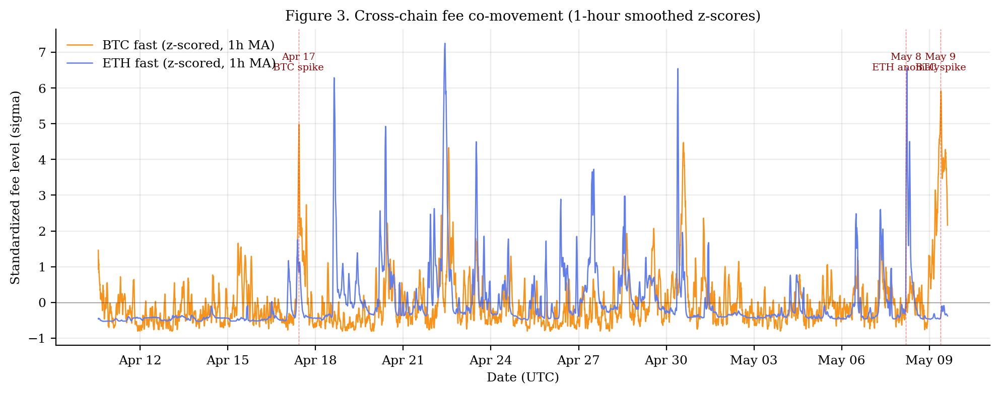
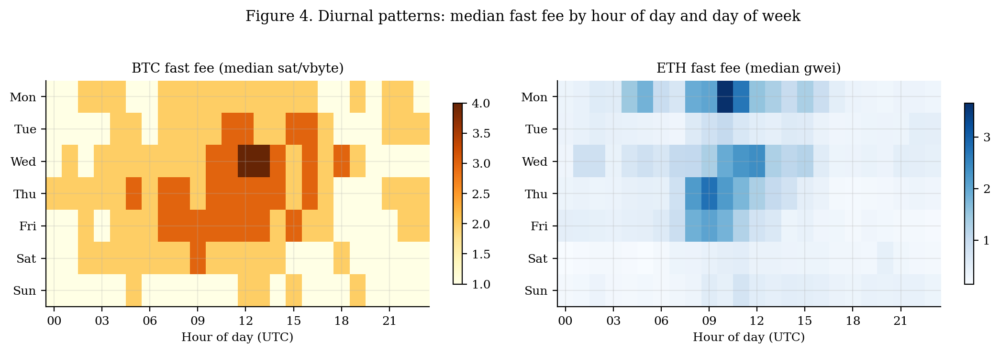
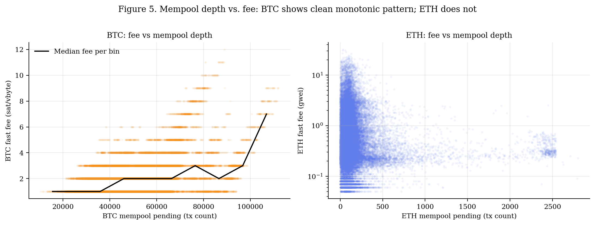
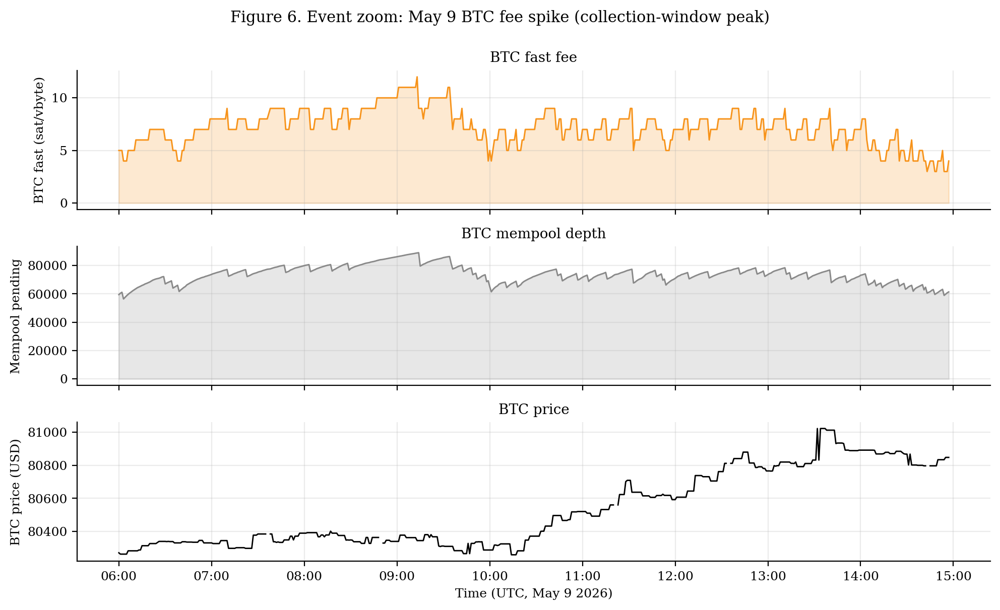

Abstract. We construct a minute-resolution dataset of Bitcoin and Ethereum fee-market state spanning roughly thirty calendar days (April 9 through May 9, 2026, UTC), comprising 42,279 timestamped observations of recommended transaction fees, mempool depth, and Bitcoin spot price. The collection window covers an unusually quiet regime in both chains: median Bitcoin fast-tier fees sat at 2 sat/vbyte and Ethereum fast-tier fees at 0.41 gwei, with both chains rarely experiencing meaningful congestion. Within this regime we document four findings. First, Bitcoin and Ethereum fee levels are only weakly correlated at minute resolution (Spearman ρ = 0.15), suggesting that calm-regime fee dynamics on the two chains are driven primarily by chain-specific factors rather than common shocks. Second, mempool depth is a strong monotonic predictor of Bitcoin fees (ρ = 0.37) but is essentially uncorrelated with Ethereum fees (ρ = −0.01), an artifact we attribute to the unreliability of pending-block transaction counts from public Ethereum RPC nodes. Third, both chains exhibit clear diurnal patterns; Bitcoin fees peak around 12:00 UTC and trough at 00:00 UTC, while Ethereum fees peak slightly earlier at 10:00 UTC, consistent with differing geographic concentrations of activity. Fourth, the contemporaneous relationship between Bitcoin fees and Bitcoin price – including realised volatility – is essentially absent in this calm regime, contradicting the common claim that price moves drive on-chain fee pressure. We document the dataset, present descriptive statistics and event case studies, and flag a methodological caveat regarding public-API fee feeds.
Transaction fees on Bitcoin and Ethereum are the price of blockspace, and they are the primary equilibrating mechanism between user demand and the fixed throughput of each chain. While substantial academic and industry attention has focused on fees during congestion episodes – the 2017 Bitcoin mempool blowout, the 2021 Ethereum NFT booms, the post-EIP-1559 transition, and the various inscription and rollup-spam events of 2023 and 2024 – relatively little has been published characterising fee markets during periods of low demand. Calm regimes are not merely the absence of interesting behaviour: they are the modal state of both chains and provide the baseline against which stress events should be measured.
This paper contributes a minute-resolution dataset of Bitcoin and Ethereum fee markets covering thirty consecutive days during a notably quiet stretch, alongside parallel Bitcoin price observations. The contribution is predominantly empirical and descriptive. We do not attempt causal identification; we document what a calm cross-chain fee regime actually looks like at high frequency, and we surface several observations that, while not all individually novel, have not previously been reported in a single coherent dataset of this resolution.
The remainder of the paper proceeds as follows. Section 2 describes the data and ingestion methodology. Section 3 presents descriptive statistics. Section 4 examines cross-chain co-movement. Section 5 documents intra-day patterns. Section 6 discusses three notable events recorded in the window, including a fee-API anomaly that informs a methodological caveat. Section 7 concludes and outlines next steps.
Bitcoin fee tiers (fast, medium, slow, economy, minimum) and pending-transaction count are sourced from the public mempool.space API. Recommended fees are expressed in satoshis per virtual byte (sat/vbyte). Ethereum fee tiers (rapid, fast, standard, slow, expressed in gwei) are sourced from the beaconcha.in gasnow endpoint. Ethereum pending-transaction counts are obtained from a public RPC node via the eth_getBlockByNumber method with the pending tag. Bitcoin spot price (USD) is obtained from mempool.space's prices endpoint, which aggregates major spot venues.
An asynchronous Python ingester polls each endpoint on an approximately one-minute cadence and writes one row per source per minute to a PostgreSQL table. Bitcoin ingestion began on April 9, 2026 at 17:10 UTC; Ethereum ingestion was added on April 10, 2026 (first row 13:36 UTC); Bitcoin price ingestion was added on April 11, 2026 (first row 13:36 UTC). The dataset analysed in this paper consists of all rows up to May 9, 2026 at 14:57 UTC.
For analysis we extract the rows on the Bitcoin track and left-join the Ethereum and price observations on the truncated minute timestamp. This yields 42,279 rows over a span of 29.9 days. Because Ethereum and price ingestion started after Bitcoin, the early portion of the window has Bitcoin-only observations. Coverage is otherwise near-complete. The median row-to-row gap is exactly one minute, with a single notable outage of 46 minutes on April 19 (18:53–19:39 UTC), attributable to an ingester restart. All correlations and percentiles are computed pairwise on non-null rows; we do not impute.
| Field | Source | First obs (UTC) | Non-null rows |
|---|---|---|---|
| BTC fast/med/slow fee | mempool.space | 2026-04-09 17:10 | 42,279 |
| BTC pending count | mempool.space | 2026-04-09 17:10 | 42,279 |
| ETH fast/med/slow fee | beaconcha.in gasnow | 2026-04-10 13:36 | 40,390 |
| ETH pending count | public RPC (pending blk) | 2026-04-10 13:36 | 40,390 |
| BTC spot price (USD) | mempool.space | 2026-04-11 13:36 | 39,070 |
Figure 1 presents the full thirty-day overview. The visual impression is of two extremely quiet markets. Bitcoin fast fees never exceed 12 sat/vbyte and spend most of the window between 1 and 3 sat/vbyte; Ethereum fast fees never exceed 32 gwei. Bitcoin's spot price drifted upward from $70,577 to $82,737 over the window, an increase of roughly 17%, with the typical low-amplitude chop of a trending but uneventful market.

Figure 2 shows the unconditional distributions. Bitcoin fast fees follow a roughly geometric distribution heavily concentrated at the floor of 1 sat/vbyte. Ethereum fast fees are approximately log-normal in shape, spanning roughly four orders of magnitude. The Bitcoin price distribution is bimodal, reflecting the two clusters visible in the time series around the $75k and $80k handles.

Tables 2 and 3 report key percentiles for the two chains. The contrast between the 50th and 99th percentile rows is informative: a fee user willing to wait for the median condition pays approximately one quarter of what they would pay during the worst 1% of minutes, and an order of magnitude less than the most extreme observed minute. This dispersion exists even in a calm regime.
| Percentile | Fast | Medium | Slow | Mempool (tx) |
|---|---|---|---|---|
| p5 | 1 | 1 | 1 | 29,332 |
| p25 | 1 | 1 | 1 | 40,263 |
| p50 | 2 | 1 | 1 | 50,436 |
| p75 | 3 | 1 | 1 | 60,723 |
| p95 | 4 | 4 | 3 | 81,715 |
| p99 | 7 | 7 | 6 | 95,399 |
| Max | 12 | 11 | 10 | 111,990 |
| Percentile | Fast (gwei) | Medium (gwei) | Slow (gwei) | Mempool (tx) |
|---|---|---|---|---|
| p5 | 0.07 | 0.06 | 0.05 | 12 |
| p25 | 0.23 | 0.19 | 0.15 | 56 |
| p50 | 0.41 | 0.34 | 0.27 | 99 |
| p75 | 1.03 | 0.86 | 0.69 | 166 |
| p95 | 3.98 | 3.32 | 2.65 | 488 |
| p99 | 10.25 | 8.54 | 6.83 | 2,202 |
| Max | 31.98 | 26.61 | 21.28 | 2,801 |
A natural question is whether fee pressure on Bitcoin and Ethereum is driven by common factors. Common-factor stories range from the macroeconomic (a risk-on shift boosts on-chain activity in both ecosystems simultaneously) to the technical (cross-chain arbitrage during a price move forces transactions on both chains). Either story implies non-trivial contemporaneous correlation in fee levels.
In our window, the Spearman rank correlation between minute-level Bitcoin fast fees and Ethereum fast fees is 0.145 (Pearson 0.115). This is a weak relationship. Figure 3 shows the two series as one-hour-smoothed z-scores on a shared axis, with annotations for the three notable spikes discussed in Section 6. By visual inspection, the two series move largely independently; episodes where both chains are simultaneously elevated by more than one standard deviation are uncommon.

We caution against over-interpretation. Thirty days is a short window, and a calm regime is precisely the setting in which common-factor effects would be expected to be smallest in absolute terms. A regime including a major macro event or a sustained congestion episode on either chain would likely produce a different reading. The result here is best interpreted as a baseline against which future regimes may be compared.
Fee markets reflect the underlying activity patterns of the user base. Bitcoin's user base is geographically broader and arguably more nocturnal than Ethereum's, given the concentration of decentralised-finance and NFT activity on Ethereum among users in U.S. and European time zones. We test whether this distinction shows up in the diurnal fee profile.

Bitcoin median fees peak at hour 12:00 UTC and trough at 00:00 UTC. Ethereum's peak occurs slightly earlier at 10:00 UTC and the trough at 23:00 UTC. The roughly two-hour offset is consistent with the hypothesis that Asian-hours DeFi activity contributes meaningfully to Ethereum's demand profile, while Bitcoin's profile more cleanly tracks U.S./European trading hours. Figure 4 also reveals weekday-versus-weekend differences, with Saturdays and Sundays generally showing lower fees than weekdays on both chains, though the effect is more pronounced on Ethereum.
Within Bitcoin, the contemporaneous Spearman correlation between mempool pending-tx count and fast-fee level is 0.368 – a moderate, monotonic relationship of the sort one would expect from textbook fee-market intuition. On Ethereum the analogous correlation is −0.009, which is indistinguishable from zero. This is anomalous on its face: Ethereum's fee mechanism is, if anything, more directly mempool-driven than Bitcoin's after EIP-1559. We diagnose the source of the anomaly in Section 6.3.

The largest Bitcoin fee event in the window occurred on the closing day of ingestion, May 9, 2026. Beginning around 09:00 UTC, the fast tier rose from its baseline of 1–2 sat/vbyte to a peak of 12 sat/vbyte at 09:13 UTC, with the medium tier reaching 11. Mempool depth simultaneously climbed to 89,000 pending transactions, more than 1.7 times the 30-day median. Bitcoin's spot price during the same window was effectively flat at approximately $80,300, suggesting the spike was demand-side rather than price-driven. Figure 6 zooms into the event.

On May 8 between 04:43 and 04:47 UTC, the beaconcha.in gasnow rapid tier briefly read 32 gwei – roughly 80× the 30-day median fast-fee level. Under the standard interpretation of a fee feed, this would imply an acute congestion event. However, the parallel ETH mempool count from the public RPC was simultaneously between 28 and 69 pending transactions – well below the 30-day median of 99 and inconsistent with congestion. A small handful of high-tip private-orderflow transactions (likely MEV-related) appears the most plausible explanation: a single bundle paying an outlier tip can dominate the “rapid” estimator without measurably affecting the public mempool.
This observation has methodological implications. Researchers using public Ethereum fee APIs at minute resolution should be aware that the rapid-tier feed can be moved by isolated private-orderflow transactions that do not represent the broader fee environment. It also explains the near-zero ETH-fee/mempool correlation reported above: the fee feed and the pending-block count effectively measure different populations of transactions, and the latter is itself unreliable across public RPC providers.
A common informal claim is that on-chain fees rise during periods of high price volatility, on the theory that volatility drives both arbitrage flow and end-user liquidations. In the calm regime studied here, this relationship is essentially absent. The contemporaneous Spearman correlation between Bitcoin fast fees and spot price is 0.123; the correlation between fast fees and the absolute one-hour rolling price change is 0.022. We do not interpret this as evidence against the volatility-fee link in general; the window simply does not contain the kind of large price moves that would test the hypothesis. It does, however, suggest that the relationship is not present in the modal calm regime, and any future paper on this question should be careful to specify the regime under which the claim is being made.
This paper documents a thirty-day, minute-resolution dataset of Bitcoin and Ethereum fee dynamics during a calm regime. The findings – weak cross-chain co-movement, a clean BTC-mempool relationship, a broken ETH-mempool relationship, distinguishable diurnal profiles across the two chains, and a near-zero fee-price relationship in the absence of a real volatility shock – together provide a baseline characterisation of fee markets in their modal state, against which future regime-shift studies can be compared.
Three immediate next steps are planned. First, ingestion will continue uninterrupted, with the goal of capturing at least ninety days of data including any congestion event that occurs in the meantime; the May 9 Bitcoin spike already documented in this paper hints that such events may not be far off. Second, the dataset and ingestion code will be released openly, allowing replication and broader use. Third, a companion methodological note will document the specific failure modes of public fee APIs at minute resolution observed here, including the May 8 Ethereum anomaly and the general unreliability of public-RPC pending-block transaction counts.
We close with a caveat. Thirty days is a short window, and a calm thirty days is shorter still in information content. None of the findings reported here should be treated as conclusive about cross-chain fee dynamics in general; they describe one regime in detail. The contribution lies in the careful documentation of that regime and in the dataset itself.
The full minute-resolution CSV used in this paper, together with the Python ingestion scripts and the analysis notebook, are intended to be released under a permissive license at the time of publication. Please contact the author for early access.